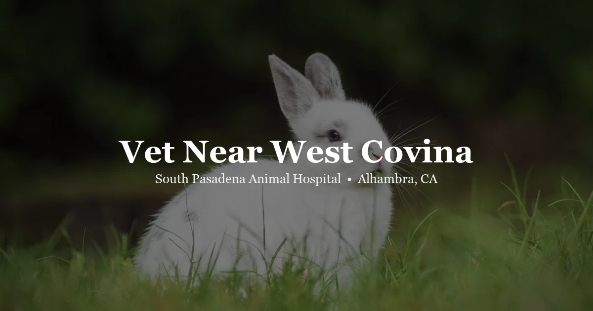

May 8, 2026 · 4 min read
Looking for a Vet Near West Covina? SPAH Is About 15 Minutes Away

Finding a vet near West Covina who sees exotic pets is harder than it should be. Most general practice clinics in the area have limited experience with rabbits, reptiles, birds, and other non-traditional pets. If you're searching for someone who genuinely knows these animals — not just sees them occasionally — South Pasadena Animal Hospital is worth the short drive.
We're in Alhambra, at 3116 W Main Street — about 15–20 minutes west of West Covina via the 10 Freeway. We've built a real focus on exotic animal medicine, and it shows in the variety of patients we see.
Who we see
Our exotic patient list covers a wide range. Rabbits make the trip most often — GI stasis is our number-one rabbit emergency, alongside dental disease, respiratory infections, wellness exams, and spay/neuter; they're one of the exotic species we see most. Guinea pigs come in for dental malocclusion, respiratory disease, skin conditions, vitamin C-related issues, and general wellness. Reptiles cover bearded dragons, leopard geckos, blue-tongued skinks, ball pythons, corn snakes, tortoises, red-eared sliders, and crested geckos, usually for husbandry counseling alongside illness evaluation. Birds — parrots, cockatiels, budgies, lovebirds, finches, canaries — bring annual wellness visits, feather problems, respiratory infections, and egg-laying issues. And small mammals round it out: hamsters, rats, mice, chinchillas, ferrets, hedgehogs, degus.
For dogs and cats: we're not currently taking new dog and cat clients, but we serve existing clients for these species.
Why the drive makes sense for exotic pets
The short answer: exotic pet vets are scarce, and the difference between a clinic that sees these animals rarely and one that sees them regularly is significant. Pattern recognition — knowing what normal looks like, what common presentations feel like on palpation, what disease progression looks like across species — comes from volume. We've accumulated enough of it that owners from West Covina, Covina, Baldwin Park, and other nearby communities regularly make the trip.
For something non-urgent — a wellness exam, a preventive dental check, a question about husbandry — making a 20-minute trip once a year is a reasonable trade. For something urgent, like a rabbit that's stopped eating or a reptile that's wheezing, you want to know where to go before it happens. We're here.
Booking from West Covina
No referral required. Book directly through our online portal or call (626) 441-1314. If you're unsure whether we see your specific species, give us a call first — we're happy to answer before you make the drive.
See our pricing page for visit fees. We try to be transparent about costs so there are no surprises.
Getting here from West Covina
Take the 10 Freeway west, exit at Fremont Ave or Garfield Ave, and head north toward Main Street in Alhambra. We're right on Main Street in central Alhambra with parking available. Typical drive time from central West Covina: 15–20 minutes off-peak, 25–30 during commute hours.
Frequently Asked Questions
Is there an exotic vet near West Covina?
South Pasadena Animal Hospital in Alhambra is about 15–20 minutes from West Covina and focuses significantly on exotic animal medicine. We see rabbits, guinea pigs, reptiles, birds, hedgehogs, and other exotic species.
What exotic pets do you see?
Rabbits, guinea pigs, chinchillas, ferrets, hamsters, rats, birds, reptiles (bearded dragons, leopard geckos, ball pythons, corn snakes, blue-tongued skinks, tortoises), and hedgehogs. Call us if you have a species not on this list.
Do I need a referral?
No — book directly through our online portal or by calling (626) 441-1314. We are accepting new exotic pet clients from West Covina and surrounding areas.